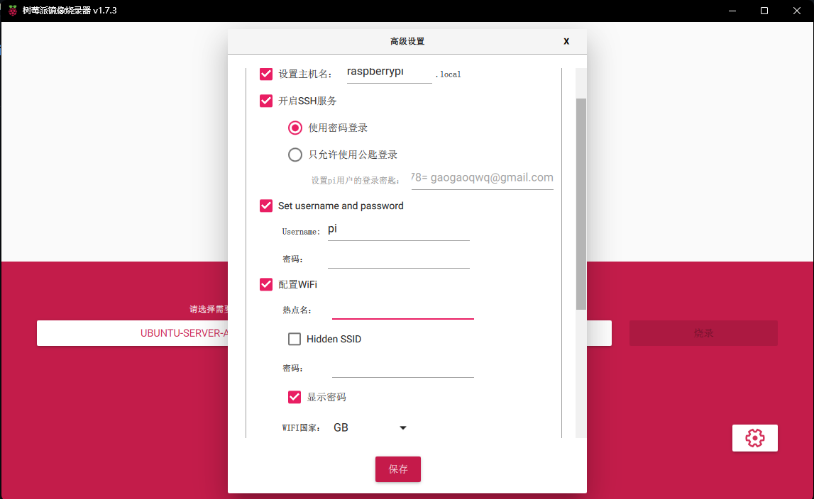
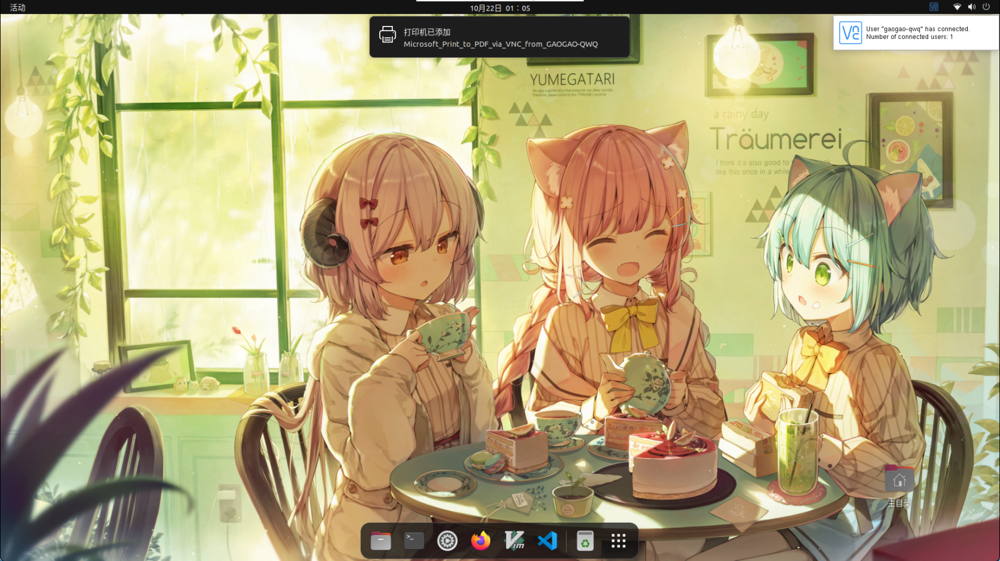
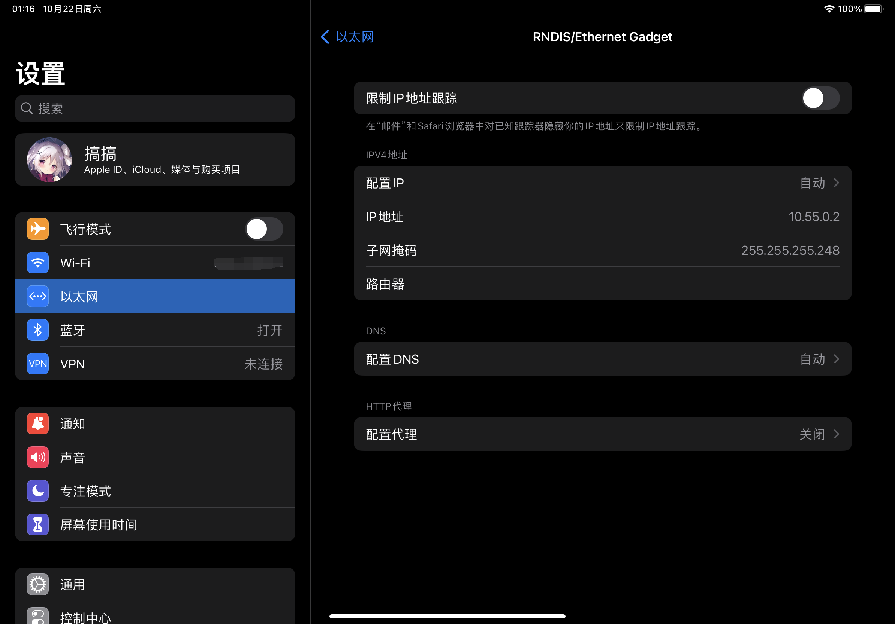

Ubuntu on Raspberry Pi4 type-c 一线连接 iPad 解决方案
Ubuntu on Raspberry Pi4 type-c 一线连接 iPad 解决方案
其实在很早就有人发现可以让树莓派4通过一条 type-c 线将 iPad 和树莓派置于同一局域网下了，如果没记错的话大概是 这篇文章，也有人基于这篇文章做了个 视频。
国内也有人制作了 一键式 .sh 脚本 和 视频。
但这些都是针对树莓派官方提供的系统的解决方案，那么有没有一种针对 Ubuntu 的 type-c 一线连解决方案呢？
刷入镜像
其实也是有的，在 这个仓库 中其实已经有人帮我们做了一个配置好 type-c otg 的树莓派 Ubuntu Server 镜像，只需要进入该仓库的 Release 页面即可获取，接下来只需要走一遍已经刻入 DNA 里的刷入树莓派镜像流程即可，不过需要注意的是，如果对 linux 不是很熟悉，可以先在官方提供的工具中先把 Wi-Fi 连上，省的还要在终端里自己写配置文件。

安装完后通过你能想到的任何方式（ssh, HDMI, etc.）进入终端，开始桌面环境的安装（如果你习惯不装桌面，那你已经可以靠自己解决接下来的所有问题了。）
桌面环境安装
首先换源，用你想用的编辑器打开或者直接用 linux 文件编辑指令都可以
1 | |
这里我用的是中科大源，直接把所有的地址改成中科大的即可，没什么难度
1 | |
然后是每个 linux 开箱后的传统两部曲
1 | |
然后装个你想用的 display manager，这里我装的是 lightdm
1 | |
输入以下指令，然后去泡杯茶吧等着吧（
1 | |
但是如果就这样重启后进入桌面，会惊讶地发现 Wi-Fi 不可用，其实这很正常，因为我们装的是 Ubuntu Server，网络会默认由 netplan 控制。所以我们需要在重启之前，用任意你喜欢的文本编辑器打开 /etc/netplan/50-cloud-init.yaml
1 | |
这里面存储的就是你在刷入镜像时在设置界面填写的你的 Wi-Fi SSID 和密码，我们只需要吧这些全部注释掉后重启系统即可在桌面中随意切换 Wi-Fi 啦~
1 | |
然后，只需要执行 sudo reboot 重启系统即可进入桌面啦~
至此，只使用 HDMI 的 Ubuntu 桌面配置到此结束了，但这可是 type-c 一线连的教程，我们的目标是能够实现 iPad 通过 VNC 连接至树莓派桌面，所以请继续往下阅读 VNC 方案
VNC Server 安装
在安装 VNC Server 之前，首先需要更改一下树莓派的配置文件，打开如下文件，当然你也可以用读卡器在其他系统下直接更改sd卡下的 config.txt 文件
1 | |
在文件的最末添加如下三行即可，其中 framebuffer_width 和 framebuffer_height 可以更改为你想要的分辨率来适配各种设备，hdmi_force_hotplug 让树莓派可以实现 HDMI 热插拔，只有打开才能实现我们想要的 headless。
1 | |
更改完毕后开始进行 VNC Server 的安装，这里我选用的是 RealVNC 的方案，你可以到官网下到树莓派 arm64 的 .deb，或者也可以到树莓派镜像源获取。
1 | |
下好后直接 dpkg -i 安装即可
1 | |
接着，我们 cd 到 /usr/lib/aarch64-linux-gnu
1 | |
执行如下指令
1 | |
最后，启用并启动一下 VNC Server 服务
1 | |
重启系统即可通过 VNC 连接至树莓派啦，让我们分别试试通过 Wi-Fi 的 VNC 远程连接和直接使用 type-c 一线连后通过 iPad VNC 连接至树莓派

需要注意的一点是 iPad 通过 type-c 连接上树莓派后会在设置中多出来一个 “以太网” 选项，如果点进去后能看到 IP 地址则说明配置成功，只需要在任意 VNC 客户端中输入地址 10.55.0.1 即可连接，如果没有看到 “以太网” 选项，那你应该重新阅读此文，检查是否有什么地方有所疏漏（或者本篇文章有什么地方有所疏漏）。若果你已经看到以太网选项但是一段时间后该选项自动消失了，那你应该试试用上面的指令重新启用 VNC Server 服务，重启然后重新连接 iPad。
